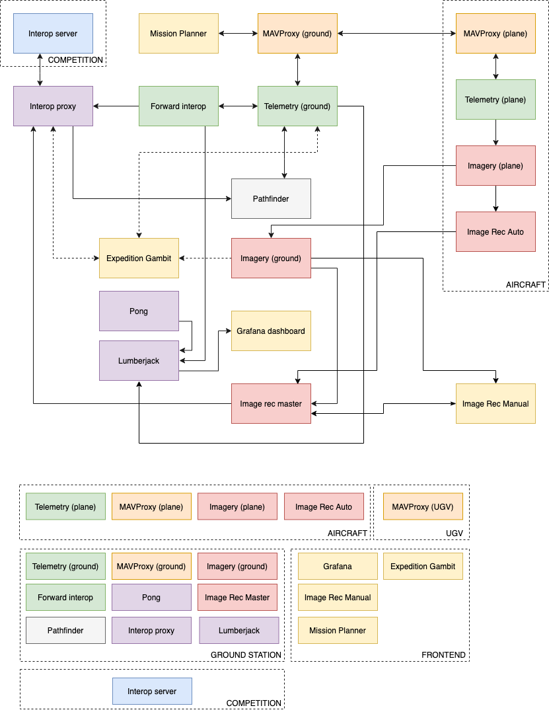
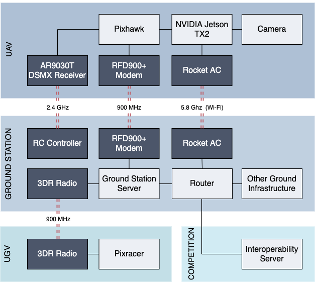

Introduction
Welcome to UAV Austin's architecture guide and (occassionally) history book.
This guide is intended to familiarize you with the workings of the software team, its interactions with the hardware team, and the current implemented architecture of the software stack.
Note that this book will always be a work-in-progress. If you have implemented new parts of the architecture that you are ready to document, or have new history to record, do not be afraid to edit the docs.
Check out our 2019 Technical Paper for a really in-depth, wholistic look at the architecture of our plane.
Select an item on the left to continue.
About the Competition
The main purpose of UAV Austin is to compete in the Student Unmanned Aerial Systems Competition, which is run by the Seafarer Chapter of the Association for Unmanned Vehicle Systems International. Otherwise known as the AUVSI SUAS competition, the competition is held yearly at Webster Field in St. Inigoes, MD.
While the competition in itself is rather brief and the organization consistently makes a net loss, the University continues to fund the organization because of its intrinsic educational value. Systems engineering is a multidisciplinary field that is not rigorously taught in formal courses, so the Aerospace Engineering department funds UAV Austin to provide an extracurricular, hands-on approach to learning systems engineering.
The full history of UAV Austin is unknown, as the original senior members have since left. The only person who has assisted UAVA from its conception in 2006 has been Mark Maughmer II, the designated safety pilot who is also a staff member for the Aerospace Engineering department.
The goal of SUAS is to present to judges an unmanned aerial system (UAS) that can safely perform the following objectives:
- Fly autonomously through a given set of waypoints
- Avoid virtual obstacles
- Locate and recognize objects on the ground
- Deliver a payload
Teams are subranked based on their technical paper, "flight readiness review" (a 10-minute video), and mission. Their ranking in each of these categories determines the prize money allotted to them, which can exceed $6,000.
SUAS is a systems engineering competition. It is only tangentially related to aerospace engineering in that it requires the construction of an aircraft, but it could otherwise be any vehicle.
As such, many teams opt to fly kit planes, quadcopters, and hexacopters, instead of manufacturing their own aircraft. However, we create our own aircraft because aerospace engineering is the specialty of our department, and we also wish to give members experience in computer-aided design and manufacturing.
The most important part of the UAS is arguably the software, as the software ultimately provides the autonomy of the aircraft and the ability to complete the mission objectives for prize money. The importance of software is so prominent that the competition host, Phillip Tischler, is a senior software engineer at Google.
This page was derived from the HackMD document An Overview of UAV Austin.
About the Organization
What We Do
- We build a fixed-wing aircraft.
- We add hardware to the aircraft so that it can fly autonomously, take pictures, and communicate with a ground station.
- We write software that assists with recognizing images and reporting telemetry data to the competition server.
- We meet for 5 hours a week.
- We have regular socials, if that isn't enough.
- We test the UAS once a month.
- We write a paper about the UAS.
- We record a video about the UAS.
- We take the UAS to Maryland in June for a demonstration.
What We Don't Do
- We do not build quadcopters, hexacopters, or anything that ends with "-copter."
- We do not write our own autopilot software; instead, we use the well-tested ArduPilot firmware.
- We do not allow just anyone to fly the plane: only the selected ground station operator and safety pilot can fly the plane. (If you are looking to free fly, you might be interested in Design/Build/Fly.)
- We do not fly the plane for any purpose other than the AUVSI SUAS competition.
Governance Model
In May 2019, a constitution was passed to facilitate a formal transfer of power from the large number of graduating seniors to the next leadership.
The constitution was fast-tracked due to a new requirement by the Office of the Dean of Students to submit a constitution; however, subsequent bylaws that affirm the constitution's authority have not been passed. One such important bylaw is the collection of dues.
Meetings
Hardware meetings have typically been held in the computer lab of the Aerospace Department, while software meetings take up a classroom in the same building. Software meets twice a week totaling 5 hours a week, while hardware meets thrice a week totaling 9 hours a week.
Software meetings have usually been Sundays and Thursdays; however, since the destruction of the WRW building, it has been significantly more difficult to find classrooms.
Software and hardware leads are charged with taking care of attendance, which is instrumental for understanding member turnover. It is often the case that members vanish about five weeks into the semester without notice.
Camp
At the beginning of the year, there is typically a "camp" for both hardware and software members to discern their preference and determine whether or not they have the time commitment to continue. During this period, software meets three times a week, usually in separate classrooms to minimize distractions between teams.
The camp lasts three weeks, sometimes coinciding with the opening of registration for SUAS.
This page was derived from the HackMD document An Overview of UAV Austin.
Timeline
This section is divided into hardware and software, in alignment with the historical division of the hardware and software teams. Other known competition history is documented below.
Hardware History
Phoenix (2009)
Phoenix was derived from the Senior Telemaster, a tail-dragger kit plane with a 11.5cc engine. It was the UAV Group's first aircraft entered into the AUVSI SUAS competition.
Phoenix II (2010-2012)
Phoenix II was a custom-built aircraft using carbon/Kevlar composites. See the 2010 paper for more information.
Kratos (2014)
Kratos was a high-wing plane derived from the Sig Kadet Senior kit plane. (UAV Austin did not compete in 2013 - this was essentially a reboot of the "UT Unmanned Aerial Vehicle Group" with new members.)
Darth Bevo (2015-2016)
"It was awful." -- Bradley Bridges, probably
Darth Bevo was a rebuilt version of Kratos, as Kratos had been heavily modified to the point of unmaintainability.
Hugin II (2017)
Hugin II was a standard pusher design derived from a kit plane of the same name.
Sir-Vay-Lance (SVL) (2018)
SVL was a pusher plane based on the heavily modified Hugin II. While its flight profile and maneuverability were satisfactory, its setup time and decline into disrepair rendered it unusable for the long term. (However, it still makes for a decent trainer.)
Phoenix III (2019)
A polished boom-prop design made as a work of passion by Evan Wilde, Phoenix III is anticipated to meet the design needs of UAV Austin for the distant future.
Software History
Unnamed systems (the past)
Due to a rapidly-changing software environment, the software stack was in constant flux. While image recognition was always an attempted mission objective, its effectiveness could never be proven in flight. Image recognition software ranged from the NI Vision Development Module (via LabVIEW) to OpenCV.
MATLAB (?-2017)
Most calculations depended on a set of MATLAB scripts.
Orchestra (2017-)
With the work of Bradley Bridges, the entire software stack was rewritten to use containerized microservices that communicate with each other. By 2018, there were microservices written in Elixir, Node.js, Python, and Rust, all performing different tasks.
Competition History
2017
The Flight Readiness Review was changed from an in-person presentation to a 15-minute video.
2019
The water bottle drop was changed to an unmanned ground vehicle (UGV) drop.
Tischler added a "mission ID" header requirement in anticipation of allowing multiple planes to fly simultaneously. This major change to the interop server was only made two months before the competition.
Waypoints were no longer provided at the opening banquet; instead, they were provided at mission setup time.
2020
Judges no longer require a dedicated monitor to see what is going on.
The FRR's length was reduced from 15 minutes to 10. The maximum length of the tech paper was also cut.
Two aircraft will be flown simultaneously.
This page was derived from the HackMD document An Overview of UAV Austin.
Software Stack
This section of the document serves mainly to discuss the present-day software stack, specifically at the time that Bradley left it. It is mostly from my (Bennett's) subjective point of view.
But first, a word about Bradley. Aside from religious beliefs such as the choice of text editor and indentation, he had a reason for even seemingly small details. And unlike most software members, he also had copious amounts of free time to spare for working on UAVA code. This was his passion project, and he was willing to experiment injecting industry-standard practices into the project. I do not expect anyone to have anywhere near the amount of time as he did to sink into the software stack.
Despite this, Bradley will not haunt you in your sleep if you change his code. Simply be conscious about what you are trying to do.
This page was derived from the HackMD document An Overview of UAV Austin.
Our third and final plug, reading our 2019 Technical Paper is a wonderful introduction to the plane!
Software Stack Diagram
Attached below is a flowchart of all the active services and how they interact with each other. Clarification on the function of each service can be found below, as well on the README of each service's github page.

Orchestra
Orchestra is a group of Docker Compose-managed services that perform specific facilities for plane-ground communications. Services communicate with each other through Protocol Buffers over HTTP. Services can also communicate through JSON by changing the Accept/Content-Type header to 'application/json'.
Services
Services are sorted in order of dependency; more critical services go first.
Interop Proxy
Wraps the SUAS interoperability server (the "interop") with a more consistent interface that can be accessed by other services. Login state to interop is saved.
Languages/Tools: Elixir, Phoenix
MAVProxy
Present on both aircraft and ground station. Allows for communication between Telemetry, Mission Planner, and the aircraft. Communicates through an exposed UDP socket.
Languages/Tools: MAVProxy
Telemetry
Present on both aircraft and ground station. On the ground, receives telemetry information to be sent to interop (yaw, lat, lon, alt), sends/receives mission data (waypoints), and supplies vital information about the aircraft (GPS, battery, speed, velocity) to the ground station. Communicates with MAVProxy through the MavLINK protocol via UDP.
Languages/Tools: Javascript, Node.JS, Jest
Forward Interop
Forwards telemetry data to Interop Proxy and keeps track of the upload rate, both unique and raw telemetry.
Languages/Tools: Javascript, Node.JS, Jest
Imagery
Present on both aircraft and ground station. Aircraft uses the Z Camera E1 backend, ground uses the sync backend (still a work in progress), and testing uses the file backend. Service captures photos on a specified interval and saves the pictures, telemetry metadata and the assigned ID into a database.
Languages/Tools: Javascript, Node.JS, SQLite, Jest
Image Rec Master
Takes in photos (IDs) from imagery and passes them through a pipeline where they are processed (manual or auto), discarded, or submitted into a separate target pipeline. The target pipeline can submit ODLCs to the interop-proxy server or remove targets submitted to the interop server.
Languages/Tools: Python, Redis
Pong
Pings all the other services (and specified devices via ICMP ping) to check on their health.
Languages/Tools: Javascript, Node.JS, Jest
Lumberjack
[In Development] Logs data from other services into a time-series database (InfluxDB). Currently shows service ping from Pong, upload rate from Forward Interop, and the status of Telemetry on plane and ground.
Languages/Tools: Javascript, Node.JS, Jest, InfluxDB
Grafana
[In Development] real time dashboard visualization of data being collected in Lumberjack.
Languages/Tools: Grafana
Dashboard
[Deprecated] text-based dashboard that shows telemetry upload rates and the statuses of other services.
Languages/Tools: Javascript, Node.JS, Jest
Language Choice
Services that are too critical to tolerate failure were written in Elixir. The only exception is Telemetry, which was written in Node.js due to the complexity in communicating over the MAVLink protocol.
When Orchestra was being developed, there was a brief discussion over which language to use. Originally, Rust was to be used for Telemetry; however, after staring at the sixty lines of Rust that took me three weeks to write, it was decided that Rust had perhaps too steep of a learning curve to start such a complicated project as Telemetry.
Another contender was Python. There were few issues with Python, although dependencies tended to run large, and there may have been perhaps a desire to move toward functional programming, which JavaScript was beginning to support. And since we were intending to make HTTP-based microservices, Node.js seemed to fit the bill from its proven web performance.
This page was derived from the HackMD document An Overview of UAV Austin.
Pathfinder
The name of the team that works on the pathfinder is called "autopilot," which is somewhat of a misnomer. The real autopilot is ArduPilot, which runs inside a Pixhawk. The pathfinder's sole job is to reroute waypoints to avoid obstacles reported by the interop server.
This page was derived from the HackMD document An Overview of UAV Austin.
Image Recognition
Code
Target Finder
- Training, tuning, and optimizing models
- Misc recognition experiments
- Processing and generating image data
- Python3, OpenCV, TensorFlow
Target Finder Model
- Pre-processing for actual image data
- An inference-only interface for running images
- An API for the Orchestra Image Rec service to use
- Python3, TensorFlow, TensorRT
History
? - Spring 2018
A collections of scripts written in MATLAB and Python which use a variety of techniques to classify target images.
- Targets found with Canny edge detection
- Shapes classified via TensorFlow
- Characters found with Tesseract
- Trained on a minimal artificially generated training data
- Inference speed: Very Fast
Fall 2018 - Spring 2019
Using Object Detection to find and classify targets. Mainly based on Darknet model implementations.
- Shapes and characters found simultaneously with YOLOv3
- A small convolutional classifier is used to narrow down where shapes might be
- Primary colors found by clustering RGB values
- Trained on a significant amount of near-realistic semi-artificial training data
- Inference speed: Slow
Fall 2019 - Current
Replaced Darknet with TensorFlow and TensorRT.
- Interchangeable models (although primarily FasterRCNN)
- Hardware-specific model optimization
- Inference speed: Fast, thanks to a Jetson Xavier
Deprecated Services
Dashboard (Orchestra)
This was a command-line interface intended to show the health of various Orchestra services in a full-screen, text-based environment. However, it did not prove to be very useful and was scrapped in favor of Grafana.
Flight View
This was a frontend project to simplify details about the aircraft in one screen. After three major refactors, Flight View was finally scrapped.
However, a frontend is important for manual image recognition and to understand the status of the aircraft, critical services, and the interop without needing to plug into Mission Planner.
The Hardware of Software
Despite boasting a $0 budget, we do suffer expenditures from time to time, like having to give the software members some pizza from time to time so they get cracking. We also buy chips, although they tend not to be edible. Several flavors of chips we have purchased are described below, in order of succession.
Aircraft Hardware
On-Board Computer
- Raspberry Pi 2 (although the one we used was technically Rahul's - shhh!)
- We've had a couple burn out -- that's why we don't recommend them anymore.
- Raspberry Pi Zero
- It doesn't support Docker very well. Mostly garbage.
- ODROID
- A cheap Korean knockoff of the Raspberry Pi. (I mean, it's not really a knockoff, but it's easier to describe it as if it were.)
- NVIDIA Jetson TX2
- On-board; intended to be a high-performance replacement to the above.
- NVIDIA Jetson AGX Xavier
- The successor to the TX2.
Camera
- Sony α6000
- We thought it was a good idea, because other teams used this camera. It wasn't.
- Z-CAM E1
- A fast block camera with an esoteric HTTP API that embeds error codes inside JSON objects (with no content-type, mind you) instead of using HTTP error codes like any decent API
- It also gets really hot and has a known 10% chance of catching on fire.
- I'm just kidding. We don't know about any battery fires from this camera.
Ground Hardware
- A weirdly specced ASRock server rack
- Consumer-grade router
- Rocket AC
- A long-range 802.11ac transceiver.
Naming Convention
These devices tend to be named after characters in The Office. Please continue the tradition so that Bradley can feel proud.
Also, please remind P&E not to make an unholy mess with the wiring, as they always do.
This page was derived from the HackMD document An Overview of UAV Austin.
Hardware of Software Diagram
Here's a visual of the hardware that the software team directly interacts with!

Passwords
This section contains passwords to access internal hardware. Since password-protecting our hardware is not done for many other reasons than to not lose points in the competition for insecurity, they are posted here for convenience and to avoid confusion.
This section to be filled in later. Probably never.